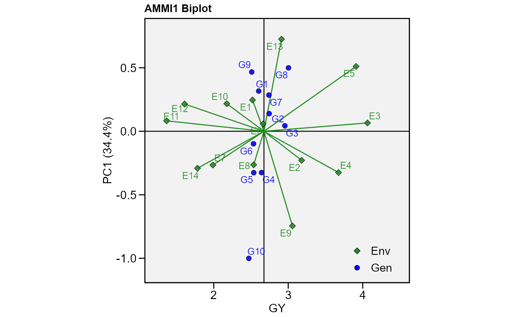
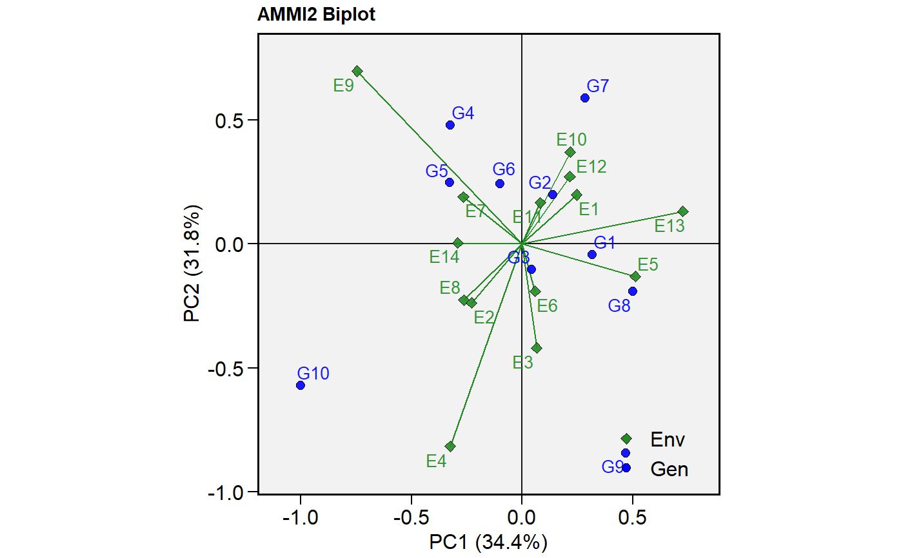
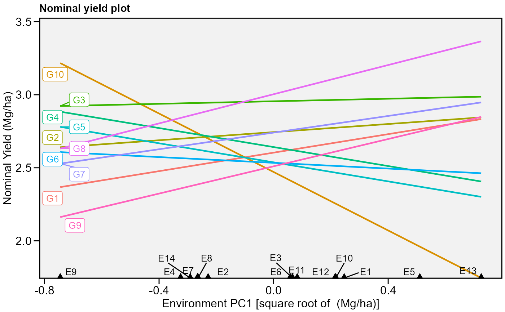
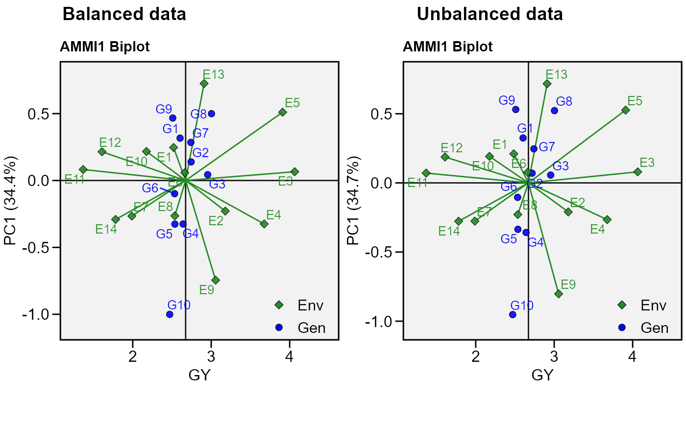

Compute the Additive Main effects and Multiplicative interaction (AMMI) model. The estimate of the response variable for the ith genotype in the jth environment (\(y_{ij}\)) using the AMMI model, is given as follows: \[{y_{ij}} = \mu + {\alpha_i} + {\tau_j} + \sum\limits_{k = 1}^p {{\lambda_k}{a_{ik}}} {t_{jk}} + {\rho_{ij}} + {\varepsilon _{ij}}\]
where \(\lambda_k\) is the singular value for the k-th interaction principal component axis (IPCA); \(a_{ik}\) is the i-th element of the k-th eigenvector; \(t_{jk}\) is the jth element of the kth eigenvector. A residual \(\rho _{ij}\) remains, if not all p IPCA are used, where \(p \le min(g - 1; e - 1)\).
This function also serves as a helper function for other procedures performed
in the metan package such as waas and wsmp
performs_ammi(.data, env, gen, rep, resp, block = NULL, verbose = TRUE, ...)
| .data | The dataset containing the columns related to Environments, Genotypes, replication/block and response variable(s). |
|---|---|
| env | The name of the column that contains the levels of the environments |
| gen | The name of the column that contains the levels of the genotypes |
| rep | The name of the column that contains the levels of the replications/blocks |
| resp | The response variable(s). To analyze multiple variables in a
single procedure, use comma-separated list of unquoted variable names,
i.e., |
| block | Defaults to |
| verbose | Logical argument. If |
| ... | Arguments passed to the function
|
ANOVA: The analysis of variance for the AMMI model.
PCA: The principal component analysis
MeansGxE: The means of genotypes in the environments
model: scores for genotypes and environments in all the possible axes.
augment: Information about each observation in the dataset. This
includes predicted values in the fitted column, residuals in the
resid column, standardized residuals in the stdres column,
the diagonal of the 'hat' matrix in the hat, and standard errors for
the fitted values in the se.fit column.
Patterson, H.D., and E.R. Williams. 1976. A new class of resolvable incomplete block designs. Biometrika 63:83-92.
Tiago Olivoto tiagoolivoto@gmail.com
#> variable GY #> --------------------------------------------------------------------------- #> AMMI analysis table #> --------------------------------------------------------------------------- #> Source Df Sum Sq Mean Sq F value Pr(>F) Proportion Accumulated #> ENV 13 279.574 21.5057 62.33 0.00e+00 . . #> REP(ENV) 28 9.662 0.3451 3.57 3.59e-08 . . #> GEN 9 12.995 1.4439 14.93 2.19e-19 . . #> GEN:ENV 117 31.220 0.2668 2.76 1.01e-11 . . #> PC1 21 10.749 0.5119 5.29 0.00e+00 34.4 34.4 #> PC2 19 9.924 0.5223 5.40 0.00e+00 31.8 66.2 #> PC3 17 4.039 0.2376 2.46 1.40e-03 12.9 79.2 #> PC4 15 3.074 0.2049 2.12 9.60e-03 9.8 89 #> PC5 13 1.446 0.1113 1.15 3.18e-01 4.6 93.6 #> PC6 11 0.932 0.0848 0.88 5.61e-01 3 96.6 #> PC7 9 0.567 0.0630 0.65 7.53e-01 1.8 98.4 #> PC8 7 0.362 0.0518 0.54 8.04e-01 1.2 99.6 #> PC9 5 0.126 0.0252 0.26 9.34e-01 0.4 100 #> Residuals 252 24.367 0.0967 NA NA . . #> Total 536 389.036 0.7258 NA NA <NA> <NA> #> --------------------------------------------------------------------------- #> #> variable HM #> --------------------------------------------------------------------------- #> AMMI analysis table #> --------------------------------------------------------------------------- #> Source Df Sum Sq Mean Sq F value Pr(>F) Proportion Accumulated #> ENV 13 5710.32 439.255 57.22 1.11e-16 . . #> REP(ENV) 28 214.93 7.676 2.70 2.20e-05 . . #> GEN 9 269.81 29.979 10.56 7.41e-14 . . #> GEN:ENV 117 1100.73 9.408 3.31 1.06e-15 . . #> PC1 21 381.13 18.149 6.39 0.00e+00 34.6 34.6 #> PC2 19 319.43 16.812 5.92 0.00e+00 29 63.6 #> PC3 17 114.26 6.721 2.37 2.10e-03 10.4 74 #> PC4 15 81.96 5.464 1.92 2.18e-02 7.4 81.5 #> PC5 13 68.11 5.240 1.84 3.77e-02 6.2 87.7 #> PC6 11 59.07 5.370 1.89 4.10e-02 5.4 93 #> PC7 9 46.69 5.188 1.83 6.33e-02 4.2 97.3 #> PC8 7 26.65 3.808 1.34 2.32e-01 2.4 99.7 #> PC9 5 3.41 0.682 0.24 9.45e-01 0.3 100 #> Residuals 252 715.69 2.840 NA NA . . #> Total 536 9112.21 17.000 NA NA <NA> <NA> #> --------------------------------------------------------------------------- #> #> All variables with significant (p < 0.05) genotype-vs-environment interaction #> Done!# Unbalanced data (GEN 2 in E1 missing) mod <- data_ge %>% remove_rows(4:6) %>% droplevels() %>% performs_ammi(ENV, GEN, REP, GY)#> ---------------------------------------------- #> Convergence information #> ---------------------------------------------- #> Number of iterations: 13 #> Final RMSE: 6.836709e-11 #> Number of axis: 1 #> Convergence: TRUE #> ----------------------------------------------#> Warning: Data imputation used to fill the GxE matrix#> variable GY #> --------------------------------------------------------------------------- #> AMMI analysis table #> --------------------------------------------------------------------------- #> Source Df Sum Sq Mean Sq F value Pr(>F) Proportion Accumulated #> ENV 13 279.841 21.5262 62.86 0.00e+00 . . #> REP(ENV) 28 9.589 0.3425 3.53 4.80e-08 . . #> GEN 9 12.919 1.4354 14.81 3.31e-19 . . #> GEN:ENV 116 30.872 0.2661 2.75 1.53e-11 . . #> PC1 21 10.699 0.5095 5.26 0.00e+00 34.7 34.7 #> PC2 19 9.853 0.5186 5.35 0.00e+00 31.9 66.6 #> PC3 17 3.844 0.2261 2.33 2.60e-03 12.5 79 #> PC4 15 3.044 0.2029 2.09 1.09e-02 9.9 88.9 #> PC5 13 1.439 0.1107 1.14 3.26e-01 4.7 93.5 #> PC6 11 0.891 0.0810 0.84 6.00e-01 2.9 96.4 #> PC7 9 0.590 0.0656 0.68 7.27e-01 1.9 98.3 #> PC8 7 0.389 0.0556 0.57 7.80e-01 1.3 99.6 #> PC9 5 0.122 0.0244 0.25 9.40e-01 0.4 100 #> Residuals 250 24.231 0.0969 NA NA . . #> Total 533 388.325 0.7286 NA NA <NA> <NA> #> --------------------------------------------------------------------------- #> #> All variables with significant (p < 0.05) genotype-vs-environment interaction #> Done!p2 <- plot_scores(mod) arrange_ggplot(p1, p2, tag_levels = list(c("Balanced data", "Unbalanced data")))# }